El equipo de Unión Española ofreció hoy la primera sorpresa del Torneo de Apertura chileno al derrotar al cuadro de O'Higgins , de Rancagua , por 5-2 , en la jornada inaugural del fútbol nacional.
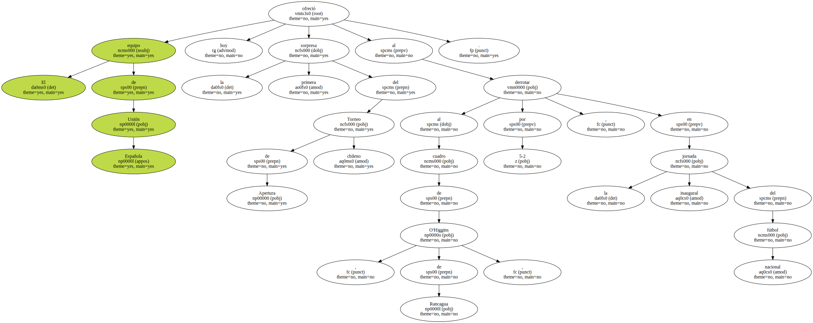En un vibrante partido , jugado en el estadio Santa Laura de Santiago , ante unas 4.000 personas , el equipo de los " diablos rojos " , supo sacar provecho de sus jugadores de medio campo y línea delantera , en la que destacó Julio Gutiérrez y Rodrigo Valenzuela.
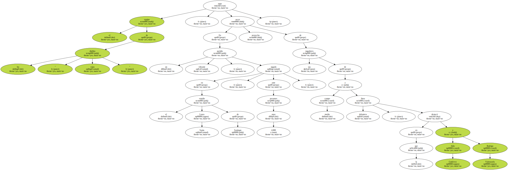Precisamente , Gutiérrez anotó a los 20 y 44 minutos , su compañero Valenzuela a los 41 ; Luis Medina , a los 47 minutos y Ricardo Queraltó a los 54.
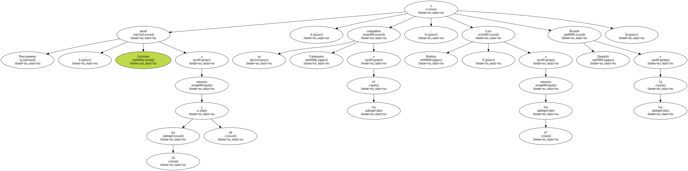Para el O'Higgins descontaron el paraguayo Alcidio Fleitas ( 27' ) y Mauricio Dinamarca ( 91' ) , ambos goles de lanzamiento penal.
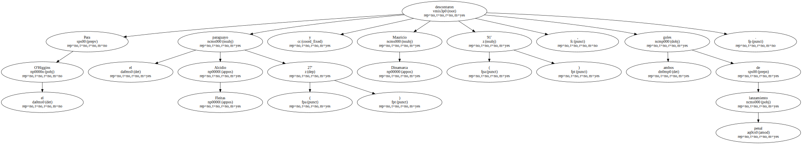En el equipo perdedor fue expulsado el jugador Ricardo Viveros , a los 60 minutos , por jugada violenta.
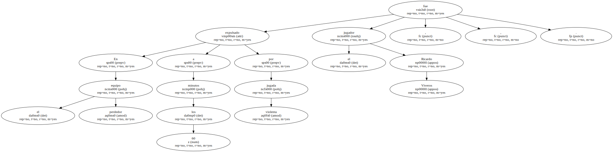El Universidad Católica , en tanto , que el próximo martes debe enfrentar al Peñarol de Montevideo , por la Copa Libertadores de América , derrotó al equipo de Santiago Morning por 1-0 , mediante un golpe de cabeza del defensa Miguel Ramírez , a los 95 minutos , que descolocó al portero Carlos Tejas , de muy buen desempeño bajo los tres palos.
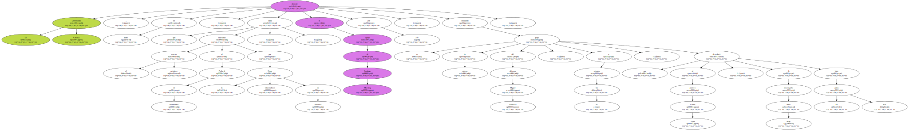El gol de Ramírez fue bastante resistido por los jugadores de Santiago Morning , que reclamaron airadamente al juez Eduardo Ponce por los cinco minutos más que se jugaron en el estadio San Carlos de Apoquindo , en Santiago.
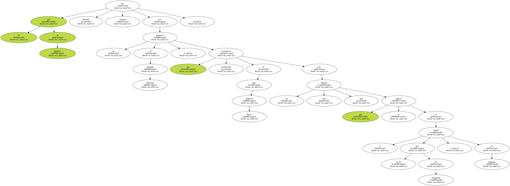El cuadro universitario que dirige el holandés Wim Rijssberden quedó en deuda con sus seguidores quienes vieron que su equipo , uno de los más poderosos del campeonato de apertura chileno , apenas pudo vencer a un Santiago Morning , damnificado por la expulsión de dos de sus mejores jugadores , Marco Muñoz y Patricio Avila , a partir de los 52 minutos.
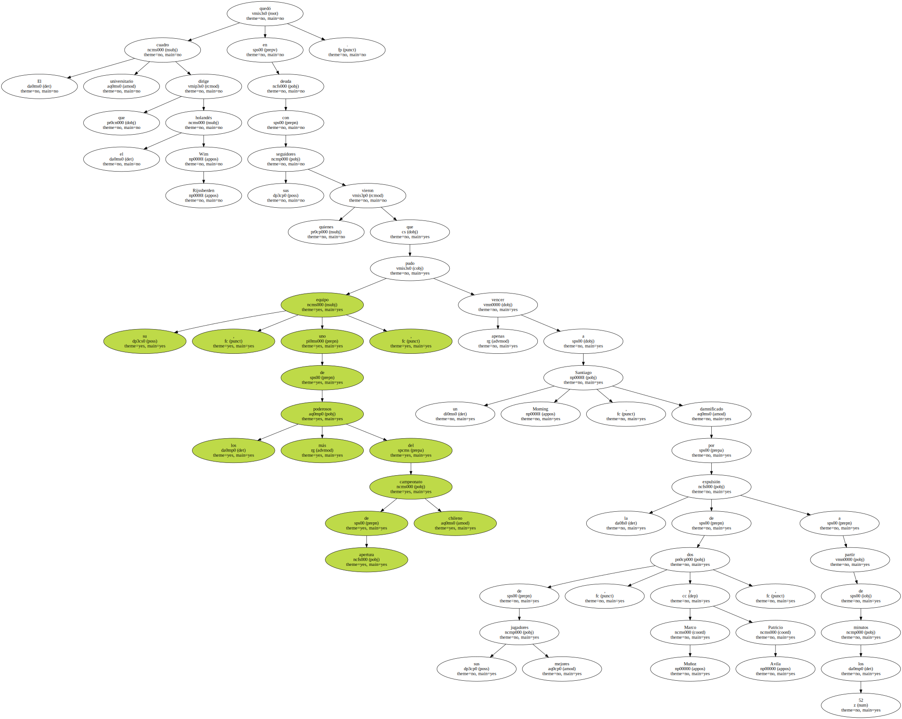" Nos faltó inteligencia en ofensiva para superar a un rival muy ordenado que colocó a muchos jugadores en la defensiva " , señaló a Rijsbergen , intentando dar respuesta al juego poco ofensivo de sus jugadores.
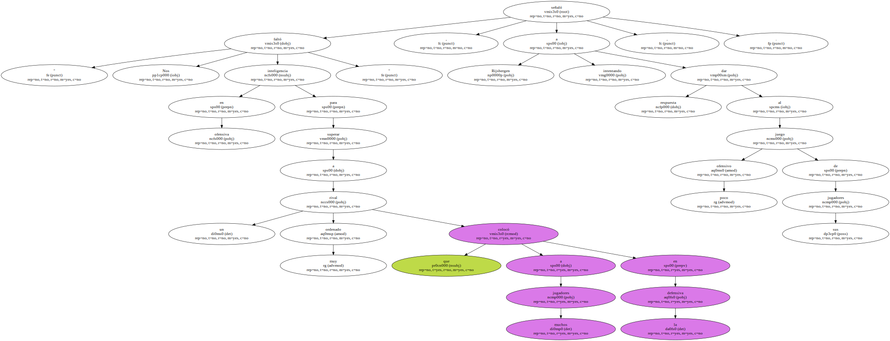Colo Colo , otro de los equipos grandes del fútbol chileno que debió viajar a la ciudad de Concepción , a 515 kilómetros al sur de Santiago , empató sin goles frente al conjunto de Huachipato , cuadro que , mediante un ordenado esquema defensivo , supo controlar los embates del cuadro visitante que conduce el uruguayo Fernando Morena.
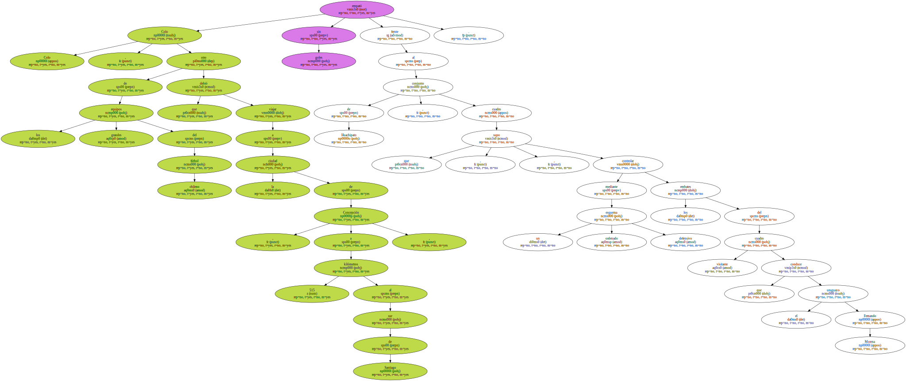Universidad de Chile , por su parte , campeón de la temporada pasada , también igualó 0-0 con Deportes Concepción , en un partido que recibió el rechazo de los seguidores del cuadro universitario.
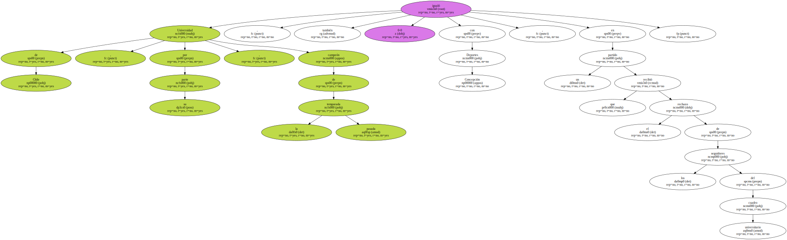Los jugadores de la " U " llegaron a este primer encuentro con varios problemas financieros sin solucionar.

Incluso , el pasado miércoles , el volante Pablo Galdames sufrió la detención temporal acusado de emitir dos cheques sin fondos debido a que , a su vez , el club no había saldado una deuda con el jugador.
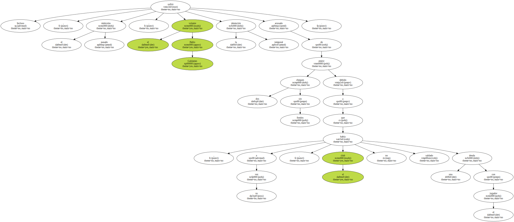Los compañeros se solidarizaron con él , se negaron a entrenar el pasado jueves y culparon de lo ocurrido a los directivos del cuadro universitario , problemas que con toda seguridad influyeron en el magro resultado de hoy , domingo.
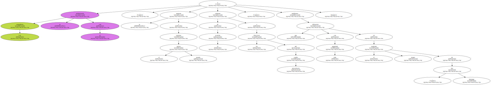La sorpresa de la primera fecha del campeonato de apertura , la ofreció el Everton de Viña del Mar , equipo recién ascendido a la primera división del fútbol chileno , al vencer en su propio feudo al equipo minero de Cobreloa por 2-1.
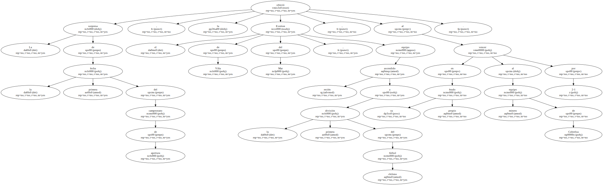Everton , que debió viajar a la ciudad de Calama , a 1.584 kilómetros al norte de Santiago , derrotó a los " zorros del desierto " mediante goles de Moisés Avila ( 32' ) y Rodrigo Delgado ( 80' ).
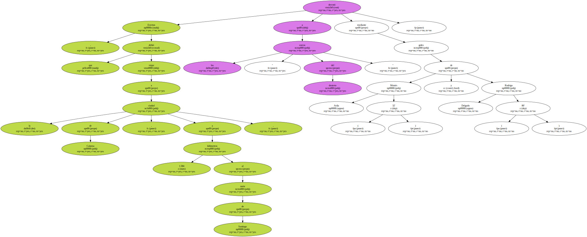El descuento de Cobreloa corrió por cuenta de Fernando Cornejo , a los 54 minutos.
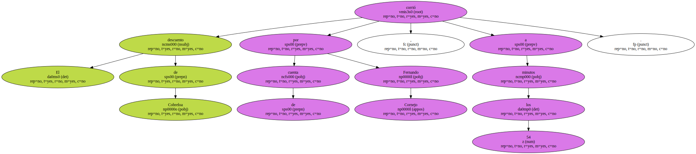La derrota del cuadro minero dejó bastante preocupado a su entrenador Arturo Salah , ya que el próximo martes sus jugadores deberán enfrentar a los del Bella Vista , de Uruguay , por la Copa Libertadores.
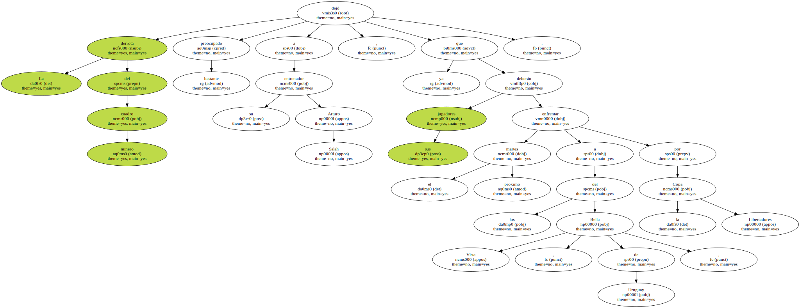Otra de las sorpresas en esta jornada inaugural , fue la derrota del Wanderers , en su propia casa , a manos del Audax Italiano , por 3-1.
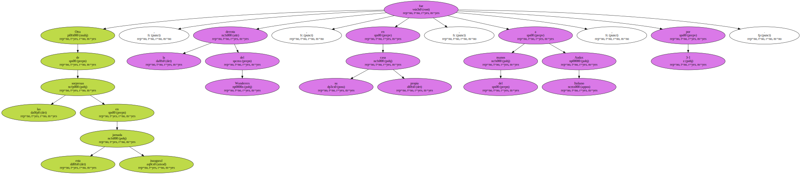Con goles de Rodrigo Vilarino ( 39' ) ; Marcos Olea ( 45' ) y Felipe González ( 84' ) , de tiro penal , los integrantes del equipo italiano le pasaron por encima a los dueños de casa que terminaron el partido con dos de sus jugadores expulsados.
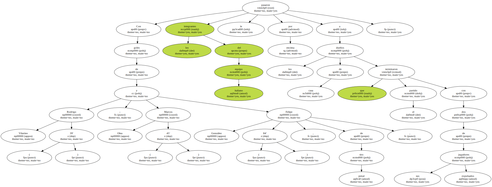El juez Cristián Lemus expulsó a los wanderinos John Ahumada y Rodrigo Pérez y a Vilarino , del cuadro visita.
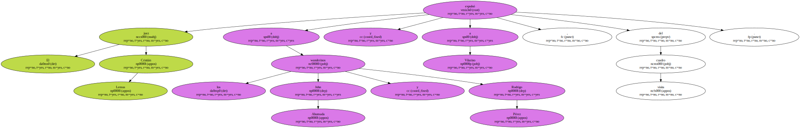En otro de los partidos de esta jornada del fútbol local , el Palestino que dirige el argentino Ricardo Dabrowski , venció por 1-0 al cuadro de Coquimbo Unido , en un partido para olvidar , ya que después del gol convertido por Nelson Lizana a los 38 minutos , ambos equipos demostraron que sus jugadores aún están faltos de rodaje.
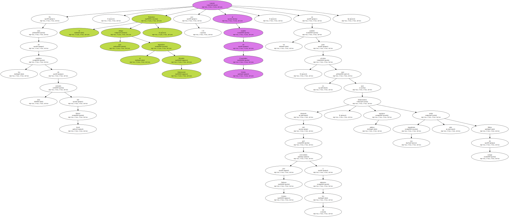Puerto Montt , en tanto , a 1.044 kilómetros al sur de Santiago , venció al Osorno por 1-0.
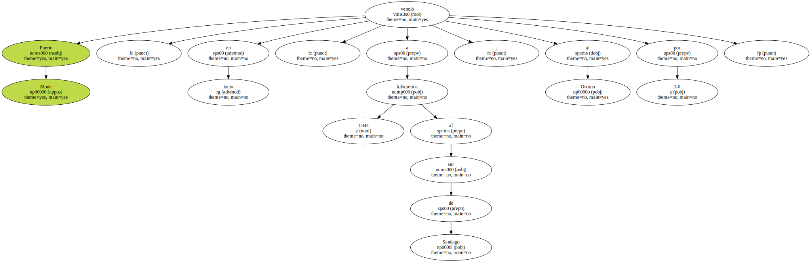El gol fue convertido por Rodrigo Barra , a los 25 minutos.
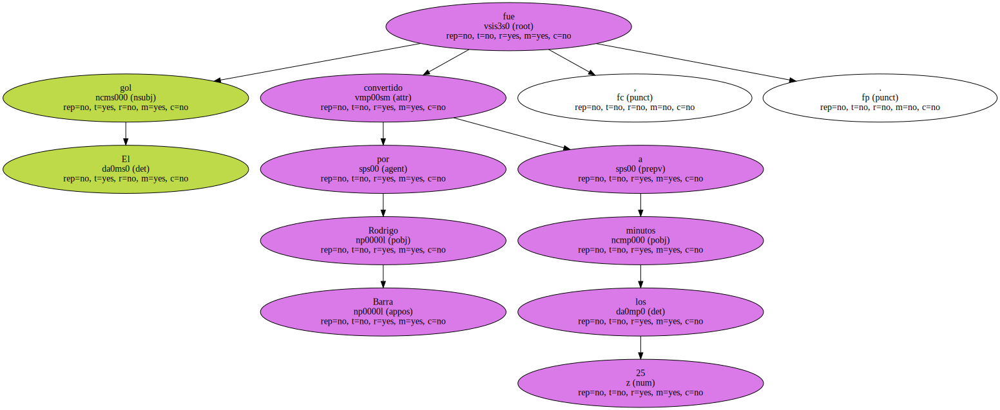Próxima jornada ( segunda ) : Everton-Palestino ; Coquimbo-Cobreloa , Colo Colo-Puerto Montt , Osorno-Huachipato , A. Italiano-Universidad Católica , Santiago Morning-Wanderers , Concepción-Unión Española y O'Higgins-Universidad de Chile.
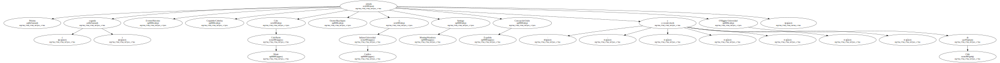